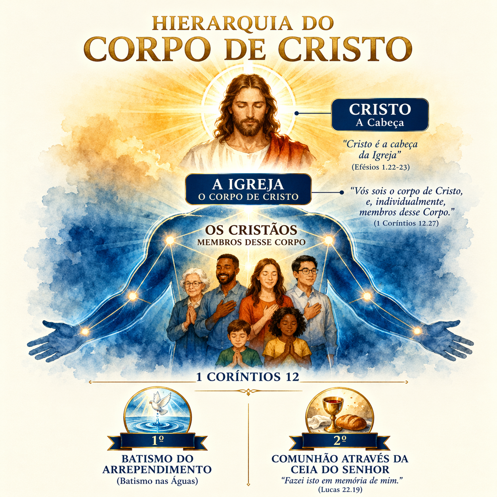

O batismo é o seu abono oficial para a integração no Corpo de Cristo. De acordo com 1 Coríntios 12, ao sermos batizados, deixamos de ser indivíduos isolados para nos tornarmos partes funcionais de um organismo vivo. Fazer parte deste Corpo significa que você agora possui uma função vital, uma responsabilidade e uma conexão direta com os outros membros sob a autoridade da Cabeça, que é Cristo.
1 Coríntios 12:12-27
Neste Corpo, a hierarquia não é baseada em prestígio humano, mas em serviço e submissão. Cristo é a Cabeça — Ele governa, direciona e sustenta. Abaixo d'Ele, o Espírito Santo distribui dons conforme Lhe apraz, e os membros cooperam entre si. Não existe membro independente; a mão não sobrevive sem o braço. Sua entrada na igreja local via batismo é o reconhecimento de que você se submete a essa estrutura divina de cuidado e ordem.
Existem heresias históricas que tentam justificar o batismo de crianças (pedobatismo) usando textos como o Salmo 51:5 ("Eis que em iniquidade fui formado..."). Embora a criança nasça com uma natureza pecaminosa, a Bíblia é enfática ao declarar que o batismo é para o arrependimento de pecados.
O termo grego para pecado é Hamartia, que significa "errar o alvo". Se o batismo é destinado a quem se arrepende de ter errado o alvo, que consciência de erro teria uma criança? Seus atos ainda estão sob a responsabilidade de seus tutores e genitores. Além disso, Jesus foi claro: "das tais é o Reino dos céus" (Mateus 19:14). O próprio Senhor Jesus só foi batizado aos 30 anos de idade, estabelecendo o padrão da consciência adulta.
Passagens que citam o batismo de "toda a casa" (como o caso de Cornélio ou do Carcereiro de Filipos) indicam que todos os que ouviram a palavra e se arrependeram foram batizados — o arrependimento sempre precede a água.
O batismo por aspersão (salpicar água) não possui respaldo bíblico nem tipológico. Se o batismo simboliza um sepultamento (Romanos 6:4), ninguém é sepultado com "um pouco de terra sobre a cabeça". Tipologicamente, na travessia do Mar Vermelho, o povo de Israel não foi apenas respingado; eles passaram pelo meio das águas, cercados por elas (1 Co 10:1-2). A palavra Baptizo exige submersão. A aspersão é uma invenção de conveniência humana que anula o sermão visual da morte e ressurreição que só a imersão total proporciona.
Portanto, ao descer às águas, você está cumprindo o modelo bíblico exato, pronto para iniciar sua caminhada de santificação e comunhão plena, inclusive na Mesa do Senhor através da Ceia do SENHOR.